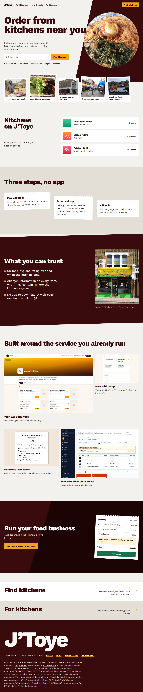
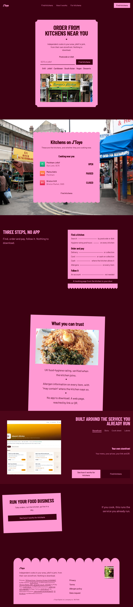
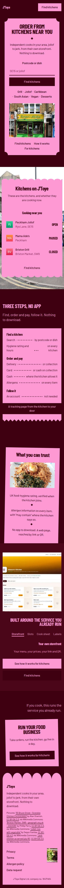
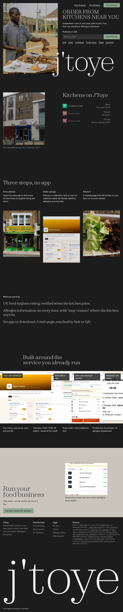
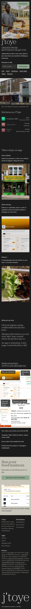
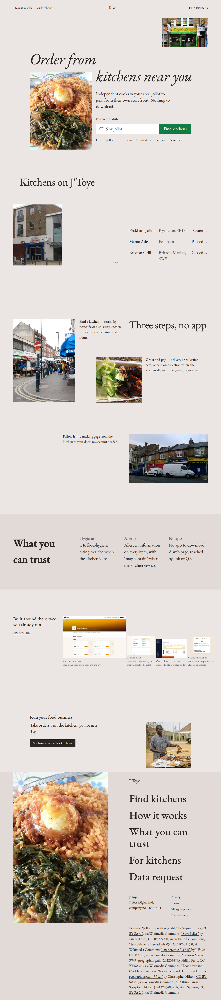
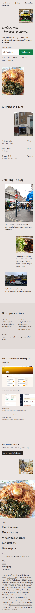

Full-page captures at 1280 and 390 px. Click a letter's link to open the live sketch and resize it; 768 and 1920 captures are in each sketch's shots/ folder.
The Pass (007 revived): diagonal slab hero, type over plate, three perforated order tickets, operator kitchen-display ticket. open the sketch · report

The page is the object: the whole page is set on a kitchen's docket pad / cook sheet; tear-off receipt, tilted cards, curtain footer. open the sketch · report


The dark room: one charcoal field, pictures lit like plates on the pass; sticky hero photograph, crossing wordmark. open the sketch · report


Photographs at uneven sizes: prints on a gallery wall on a rose-grey felt grid; stepped serif headline, search set large. open the sketch · report

